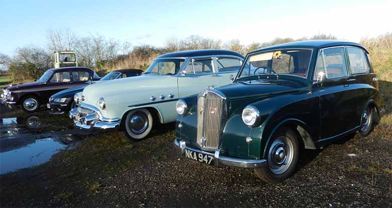

<link href="{{ site.baseurl }}/events/article.css" rel="stylesheet" type="text/css">
<main>
    <article>
        <ol id="breadcrumb">
            <li>
                <a href="{{ site.baseurl }}/">Home</a>
            </li>
            <li>
                <a href="{{ site.baseurl }}/events">Events</a>
            </li>
            <li>
                <a href="{{ site.baseurl }}/events/local">Local</a>
            </li>
            <li>Impromptu Boxing Day Meet</li>
        </ol>
        <div id="content">
            <h1>Impromptu Boxing Day Meet</h1>
            <h2>26<sup>th</sup> December 2017</h2>
            <h3>Report by Paul Burgess</h3>
            
            <p>Half way through my family Christmas dinner, I got a call saying that, as the weather was forecast to be fine, a group of die-hards had decided to have an impromptu meet on Boxing Day. So, deciding I could fit a lunchtime meet in before the next family engagement, I set off the next morning for the 15-mile journey to The Barn Restaurant at Willey, Leics. I arrived at about 11:30 in pleasant weather and over the next 2 hours or so about a dozen classics appeared. We all had a good natter and then departed to go back to our respective Christmases. A very pleasant interlude in the seasonal festivities.</p>
            <p><b>Postscript:</b> This turned out to be the last time I took my car out before I took it in for its body job <i>[I could do with one of those – Rob]</i>. I got it back today after 11 weeks (don’t ask) just in time for a forecast week of rain!</p>
        </div>
    </article>
    <aside>
        <h2>Members’ cars in attendance</h2>
        <ul class="disableListStyles">
            <li>
                <h3>Paul Burgess</h3>
                <div>
                    <div class="numberPlateMarker">NKA 947</div>
                </div>
            </li>
        </ul>
    </aside>
</main>
